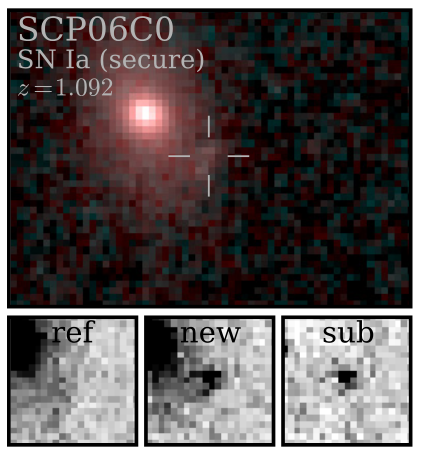
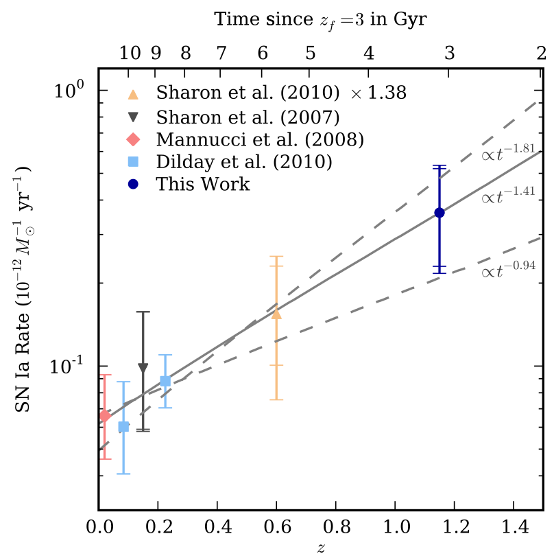
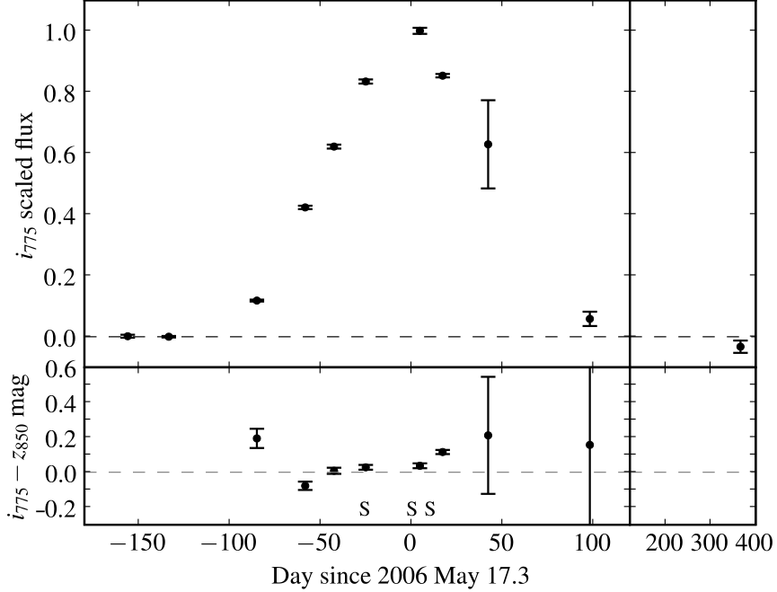

Research
Type Ia Supernova Cosmology
As a cosmologist I study the "Universe at large": how the Universe has expanded over time and the properties of Dark Energy, its largest component. I do this using Type Ia supernovae, a type of stellar explosion that can be used as an indicator of distance. These distance indicators allow us to measure how the universe has expanded over the past 10 billion years - looking back to the first third of the universe's existence!
Nearby Supernova Factory
I currently work on the Nearby Supernova Factory (SNFactory). SNFactory is an experiment using a specially designed integral field spectrograph instrument on a telescope in Hawaii. It is designed to study nearby Type Ia supernovae in great detail in order to enhance their use in cosmology.
In SNFactory, one of the main data analysis challenges has been separating the supernova spectrum in each observation from the light from the host galaxy. This is complicated by two aspects: (1) the point spread function (PSF) differs between each exposure, and (2) the field of view is so small that there are no stars available for aligning different exposures. I wrote the software CubeFit, which addresses these aspects by performing a joint optimization of the underlying galaxy shape, spectrum, supernova spectrum and relative position of every exposure.
I've also been working on infrastructure to simply and efficiently run our entire processing pipeline, which is composed of many programs (such as CubeFit) and intermediate data products.
Finally, I maintain SNCosmo, a Python package for fitting and simulating light curves of supernovae of all types (including Ia).
High-redshift Type Ia Supernovae and their rates
My graduate work was done with the Saul Perlmutter and the Supernova Cosmology Project at Lawrence Berkeley National Lab. My thesis work was on the HST Cluster Supernova Survey, a search for supernovae in the most distant known galaxy clusters. An overview of the survey was presented in Dawson et al. (2009) and cosmology results from the survey were presented in Suzuki et al. (2012). See the HST Cluster Survey website for more details on the survey.
My thesis focused on Type Ia supernova rates, particularly in galaxy clusters. In Barbary et al. (2012a) we published the highest-redshift cluster SN rate measurement, using it to constrain the SN Ia progenitor scenario via the delay time distribution.
In Barbary et al. (2012b) we presented the volumetric SN Ia rate from the survey, adding signifcantly to rate statistics at redshifts of 1 and above.
My thesis is available as a PDF.
The Superluminous Supernova SCP06F6
I published the discovery of the very unusual transient SCP06F6 in Barbary et al. (2009). Discovered during the course of the HST Cluster Supernova Survey, SCP06F6 has become a prototype event for a new class of superluminous supernovae (Pastorello et al. 2010; Quimby et al. 2011).